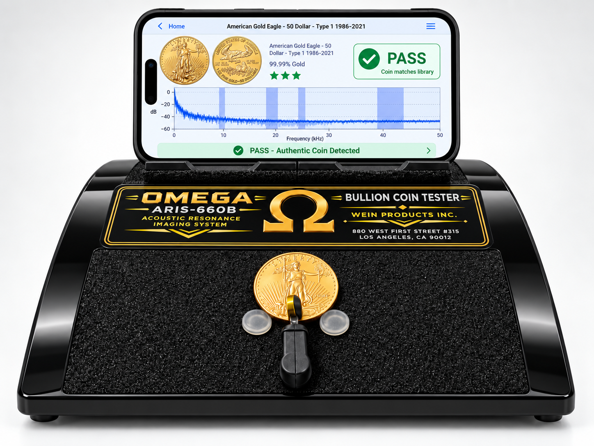
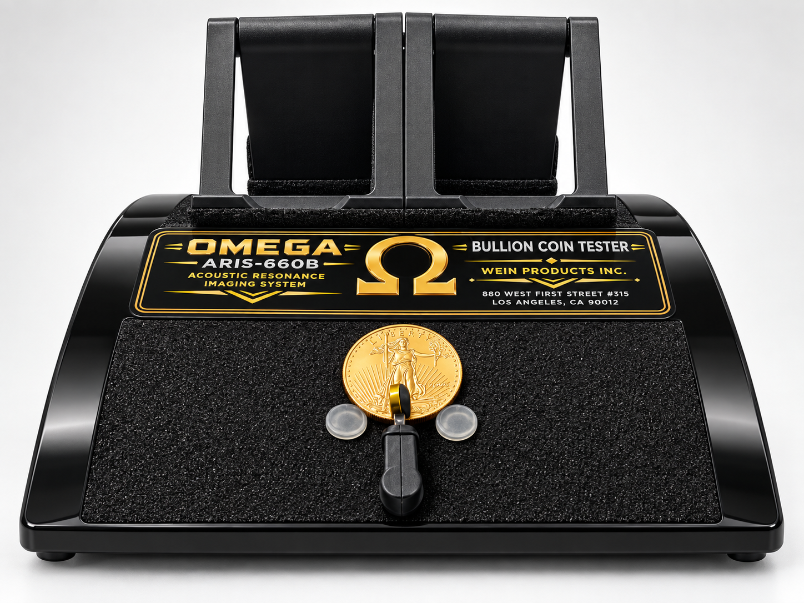

THE OMEGA ARIS CRICKET 660B GUIDE
A great coin check
starts with a
simple setup.
Meet your Omega. Choose your device.
We’ll take it one step at a time.
START HERE
Your device. Your guide.
Choose your device and one app below. Your step-by-step instructions appear immediately.
A MOMENT TO LISTEN
The coin makes a sound.
The app listens.
Choose the exact coin in your app, allow microphone access, and follow your Omega’s operating instructions.
Use the sound result alongside weight, dimensions and a visual check.
Check your Omega setupYOUR OMEGA SETUP
A place for the coin.
A place for your phone.
The coin goes under the resonator. Your phone sits above it, where its microphone can hear the coin.
- Set the Omega on a stable surface.
- Position your phone above the resonator using the intended holder. Keep its microphone unobstructed.
- Place the coin under the resonator. Follow the operating instructions supplied with your Omega to position and sound the coin.
For app setup, charge your phone with its usual charger. For the Omega’s rear battery pack and cable connections, follow your unit’s supplied instructions or ask Wein Products for help.

What about the ValuePAK?
Check the packing list supplied with your order for included batteries and cables. Customers download and pay for their own software. For package or cable questions, contact Wein Products.
A CLOSER LOOK
Your testing station.
Explore your Omega from every angle. Phone screen displays are illustrative.

DEVICE CHECK
Which devices can I use?
Phones and tablets can use the app stores. Computers can use the websites—no app installation needed. Website availability does not guarantee every browser or microphone will work.
| Device | Pingcoin | StackerTools |
|---|---|---|
| Android phone | Official Google Play listing. FAQ states Android 5.0+; confirm eligibility in Play. | Official Google Play listing. Check compatibility in Google Play. |
| Android tablet | Check the Play listing on the tablet. Install if Google Play offers it for your device. | Check the Play listing on the tablet. Install if Google Play offers it for your device. |
| iPhone | Official app. iOS 15.0+. | Official app. iOS 14.0+. |
| iPad | Official app. iPadOS 15.0+. | Official app. iPadOS 14.0+. |
| Windows | Use the Pingcoin website. Open its coin list in your browser. Internet and microphone access are needed. | Use the StackerTools website. Its browser tester is beta; the developer says Chrome has had the most testing. Keep Internet connected and allow the microphone. |
| Mac | Use the Pingcoin website. Open its coin list in your browser. Internet and microphone access are needed. | Use the StackerTools website. Its browser tester is beta; the developer says Chrome has had the most testing. Keep Internet connected and allow the microphone. |
| Linux | Use the Pingcoin website. Open its coin list in your browser. Internet and microphone access are needed. | Use the StackerTools website. Its browser tester is beta; the developer says Chrome has had the most testing. Keep Internet connected and allow the microphone. |
Sources: Pingcoin FAQ, both App Store listings and both Google Play listings; both developer websites.
NO WI-FI AT THE COIN SHOW?
Set up online.
Check offline before you go.
| When? | Pingcoin app | StackerTools app |
|---|---|---|
| Download / install | Internet required. | Internet required. |
| Purchase / first activation | Stay online while setting up or buying access. | Stay online while entering an access code or setting up the app. |
| Software / database updates | Internet for downloading updates. | Internet for downloading updates or syncing new data. |
| Normal coin testing | Developer says testing and reference data work locally, offline. | Developer advertises offline operation; verify your chosen coin and access level before travel. |
| Long-term access | Local data is not a promise of permanent paid access. Your purchase terms still apply. | No subscription advertised for the Pocket Pinger bundle. Check the developer’s terms for your purchase. |
Offline information comes from the developers: Pingcoin FAQ and Sound Money Metals. Using either website on a computer? Keep Internet connected. Offline website testing is not confirmed.
- While online, open the installed app, complete legitimate access steps and load your exact coin.
- Turn on Airplane Mode. Check that Wi-Fi is also off.
- Close and reopen the app. Check that your coin and testing screen still load.
- Follow your Omega’s operating instructions and try a sample test without Internet.
- Restore your usual connection. If the app asks to connect, resolve it before relying on offline use.
FINAL CHECK
You’re ready to test when…
Tick each item as you finish.
ADD A SECOND CHECK
Then try the other app.
Using both gives you another way to compare a coin’s sound and see how each app presents the result. Finish one app’s test before switching to the other. Agreement between two sound tests is not proof of authenticity; also compare weight, dimensions and visual details.
A LITTLE HELP
Something not working?
I can’t find or install the app.
Use the official store links in this guide. Check your Internet connection, available storage and the operating-system requirement. If your device is marked incompatible, use another supported device. Avoid unofficial download files.
The app cannot hear the coin.
Check the app’s microphone permission in your device settings. Keep the phone microphone clear and reduce background noise. Close another app that may be using the microphone. Exact settings labels depend on your device.
StackerTools is asking for a password or code.
A free download does not guarantee full access. The developer says the Pocket Pinger Bonus Pack contains an access code. Omega ownership alone does not establish that entitlement. Ask through the developer’s official site how to obtain access; do not use a shared code from an unofficial source.
I paid on another device.
Use the store account that made the purchase. Check the app for a purchase-restoration option if provided. Do not assume an Android purchase transfers to iPhone, or that one StackerTools code covers unlimited devices; check the developer’s purchase terms.
The test fails or the two apps disagree.
Check the selected coin, size, type and year range. Reduce noise and repeat only with the handling instructions supplied with your Omega. A non-match is a reason to investigate, not a final counterfeit diagnosis. Compare weight, dimensions and visual details before deciding what to do.
Which cable or battery connection do I use?
Follow the instructions supplied with your unit. If you are unsure, contact Wein Products with your unit and cable details before connecting them. The proposed alkaline AA batteries must not be treated as rechargeable batteries.
Need help with your Omega?
For product setup and package questions, visit Wein Products.
Go to WeinProducts.com ↗MORE HELP
Official app links.
Checked September 24, 2026. Store prices and compatibility can change. These are third-party apps; no partnership or bundled license is implied.
App screens may look different after an update.